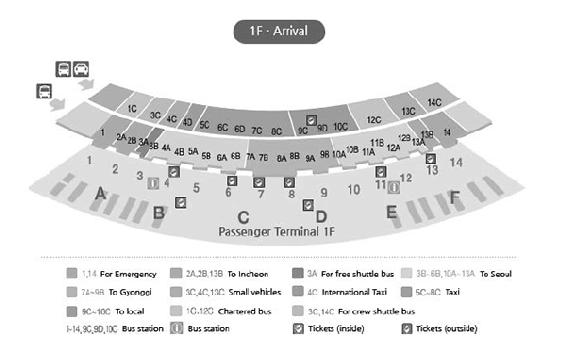

Hạ Cánh Và Các Thủ Tục Ban Đầu
Thủ tục nhập cảnh
Trên máy bay và khi máy bay gần hạ cánh, tiếp viên sẽ phát cho bạn hai tờ đơn (Arrival Card và Tờ khai các vật dụng mang vào Hàn) để khai thông tin nhập cảnh. Bạn điền thông tin vào hai tờ đó và kẹp cùng hộ chiếu.
Cửa hải quan
Khi bạn đứng đợi trước quầy kiểm tra nhập cảnh, cần chuẩn bị sẵn đầy đủ hộ chiếu, đơn đăng ký nhập cảnh và nộp cho nhân viên hải quan để được nhập cảnh hợp pháp. Ở cửa hải quan, bạn không được quay phim và chụp ảnh.
Nhận hành lý ký gửi
Sau khi hoàn thành thủ tục kiểm tra nhập cảnh, kiểm tra số băng chuyền hành lý của chuyến bay tại màn hình ngay trước quầy kiểm tra. Sau đó, chọn cầu thang máy gần với hướng băng chuyền nhất. Đợi tại băng chuyền hành lý để tìm hành lý ký gửi.
Trường hợp hành lý quá khổ hoặc bị thất lạc
Trong trường hợp không thấy hành lý của mình sau khi đợi, bạn cần tới quầy thông báo đồ thất lạc để được trợ giúp. Các mặt hàng quá khổ sẽ ra ở đường băng dành riêng cho hành lý quá khổ. Riêng tôi chưa bao giờ gặp phải trường hợp thất lạc hành lý ở Hàn.
Các phương tiện di chuyển từ sân bay
Xe buýt limousine
Từ sân bay quốc tế Incheon, bạn có thể đi xe buýt limousine đến khắp các khu vực ở Seoul và ngoại thành. Ngay tại bến hành khách tầng một (tầng hành khách đến), khu vực phía trong cạnh cửa ra số 4-9 và khu vực phía ngoài cạnh cửa ra số 4-6-7-8-11-13-9C đều có quầy bán vé xe. Xe đi Seoul có giá cao nhất là 16.000 won, đi các tỉnh thành phố khác như Daejeon giá 23.100 won (đi đêm giá 25.400 won), đi Dongdaegu giá 35.800 won, đi Wangju giá 32.300 won, đi Busan giá 46.600 won 16 .
16
Bạn có thể đặt vé xe buýt đi ngoại tỉnh tại địa chỉ: www.airportbus.or.kr hoặc tham khảo trang: www.airport.kr để kiểm tra lịch trình và điểm đón/đỗ của xe buýt limousine.

Sơ đồ sảnh ra sân bay Incheon 17
17
Nguồn http://www.airport.kr/pa/en/d/3/1/1/index.jsp
Tàu điện ngầm tuyến sân bay
Nếu máy bay hạ cánh tại sân bay quốc tế Incheon và đi về nội thành Seoul, bạn có thể sử dụng tàu điện ngầm tuyến sân bay. Bến tàu điện ngầm sân bay quốc tế Incheon nằm ở tầng hầm và tầng một thuộc Trung tâm giao thông. Tàu đi từ sân bay về thẳng bến Seoul mà không dừng lại có giá vé 8.000 won, tàu dừng lại ở các điểm trung chuyển có giá 4.250 won.

Taxi
Khu vực bắt taxi tại sân bay nằm ở khu đón khách 4C-7 thuộc tầng một, sảnh khách đến.

Thẻ cư trú người nước ngoài
Tùy theo từng trường mà sinh viên sẽ được nhà trường làm thẻ người nước ngoài (외국인 등록) cho hoặc phải tự làm.
Sau khi nhập cảnh vào Hàn Quốc, bạn cần làm thẻ cư trú người nước ngoài và bạn phải đăng ký làm thẻ trong vòng 90 ngày tính từ ngày nhập cảnh.
Hiện nay, số lượng người nước ngoài tại Hàn đang tăng lên một cách nhanh chóng nên Cục xuất nhập cảnh Hàn Quốc khuyến khích sinh viên tự làm qua online hoặc thông qua người quản lý sinh viên quốc tế để tránh tình trạng quá tải. Đồng thời các bạn cũng nên đăng ký làm thẻ sớm. Bạn có thể đăng ký online hoặc đến trực tiếp Cục xuất nhập cảnh.
Hồ sơ cần nộp:
Cần kiểm tra các loại hồ sơ cần nộp cho phù hợp với hình thức lưu trú. Số giấy tờ cần nộp có thể thêm bớt tùy theo đối tượng đăng ký.